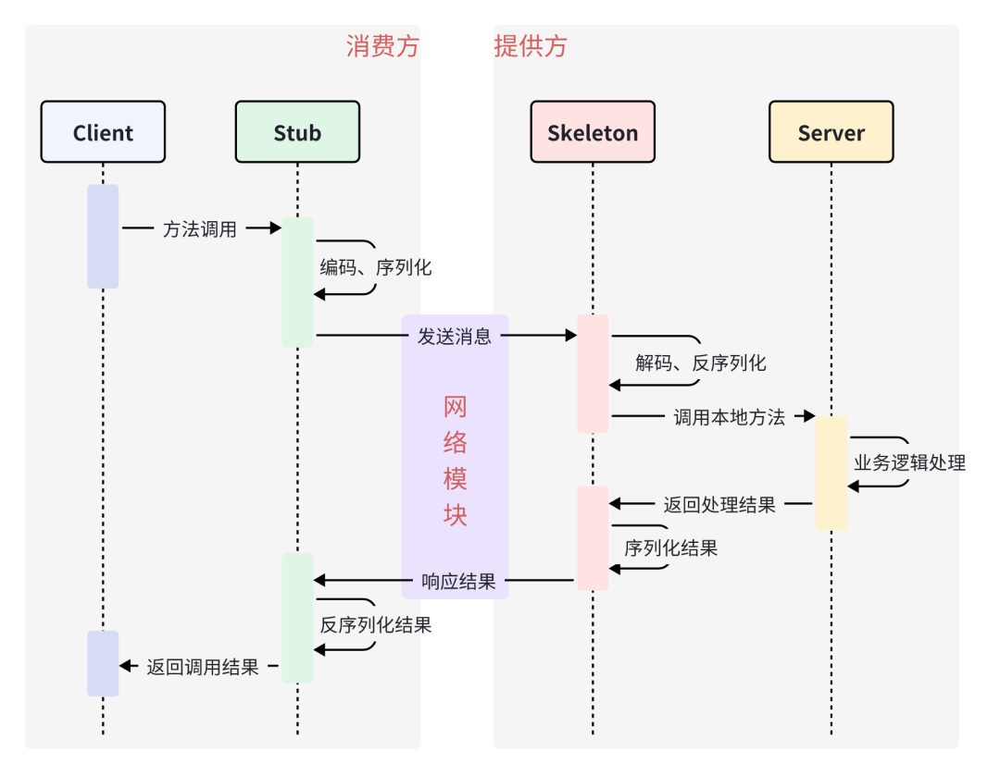

1. 介绍

1.1 什么是RPC
RPC（Remote Procedure Call Protocol）远程过程调用协议。一个通俗的描述是：客户端在不知道调用细节的情况下，调用存在于远程计算机上的某个对象，就像调用本地应用程序中的对象一样。
比较正式的描述是：一种通过网络从远程计算机程序上请求服务，而不需要了解底层网络技术的协议。
那么我们至少从这样的描述中挖掘出几个要点：
- RPC是协议 ：既然是协议就只是一套规范，那么就需要有人遵循这套规范来进行实现。目前典型的RPC实现包括：Dubbo、Thrift、GRPC、Hetty等。
- 网络协议和网络IO模型对其透明 ：既然RPC的客户端认为自己是在调用本地对象。那么传输层使用的是TCP/UDP还是HTTP协议，又或者是一些其他的网络协议它就不需要关心了。
- 信息格式对其透明 ：我们知道在本地应用程序中，对于某个对象的调用需要传递一些参数，并且会返回一个调用结果。至于被调用的对象内部是如何使用这些参数，并计算出处理结果的，调用方是不需要关心的。那么对于远程调用来说，这些参数会以某种信息格式传递给网络上的另外一台计算机，这个信息格式是怎样构成的，调用方是不需要关心的。
- 应该有跨语言能力 ：为什么这样说呢？因为调用方实际上也不清楚远程服务器的应用程序是使用什么语言运行的。那么对于调用方来说，无论服务器方使用的是什么语言，本次调用都应该成功，并且返回值也应该按照调用方程序语言所能理解的形式进行描述。
1.2 常用的RPC框架
RPC只是一套协议，基于这套协议规范来实现的框架都可以称为 RPC 框架，比较典型的有 Dubbo、Thrift 和 gRPC。
- Thrift：thrift是一个软件框架，用来进行可扩展且跨语言的服务的开发。它结合了功能强大的软件堆栈和代码生成引擎，以构建在 C++, Java, Python, PHP, Ruby, Erlang, Perl, Haskell, C#, Cocoa, JavaScript, Node.js, Smalltalk, and OCaml 这些编程语言间无缝结合的、高效的服务。
- gRPC：一开始由 google 开发，是一款语言中立、平台中立、开源的远程过程调用(RPC)系统。
- Dubbo：Dubbo是一个分布式服务框架，以及SOA治理方案。其功能主要包括：高性能NIO通讯及多协议集成，服务动态寻址与路由，软负载均衡与容错，依赖分析与降级等。Dubbo是阿里巴巴内部的SOA服务化治理方案的核心框架，Dubbo自2011年开源后，已被许多非阿里系公司使用。
- TRPC: tRPC腾讯开源的框架, 是基于插件化理念设计的一款支持多语言、高性能的RPC开发框架, 是一个基于RPC的综合管理框架(做了很多的封装,提供多语言sdk/负载均衡/过滤等等)

2. 原理
2.1 通信流程

具体流程：
- Client 客户端 通过调用本地服务的方式调用需要消费的服务
- Client Stub 存根 接收到调用请求后负责将方法，入参等信息序列化(组装)成能够进行网络传输的消息体
- Client Stub 存根 找到远程的服务地址，并且将消息通过网络发送给服务端
- Server Stub 服务端骨架 收到消息后进行解码(反序列化操作)
- Server Stub 服务端骨架 根据解码结果调用本地的服务进行相关处理
- Server 服务端 执行具体业务逻辑并将处理结果返回给 Server Stub 服务端骨架
- Server Stub 服务端骨架 将返回结果重新打包成消息(序列化)并通过网络发送至消费方
- Client Stub 存根 接收到消息，并进行解码(反序列化);
- Client Stub 存根 将解码后的结果返回给 Client 客户端
2.2 RPC 核心之功能实现
RPC 的核心功能主要由 5 个模块组成，如果想要自己实现一个 RPC，最简单的方式要实现三个技术点，分别是：
- 服务寻址
- 数据流的序列化和反序列化
- 网络传输
2.2.1 服务寻址
服务寻址可以使用 Call ID 映射。在本地调用中，函数体是直接通过函数指针来指定的，但是在远程调用中，函数指针是不行的，因为两个进程的地址空间是完全不一样的。
所以在 RPC 中，所有的函数都必须有自己的一个 ID。这个 ID 在所有进程中都是唯一确定的。
客户端在做远程过程调用时，必须附上这个 ID。然后我们还需要在客户端和服务端分别维护一个函数和Call ID的对应表。
当客户端需要进行远程调用时，它就查一下这个表，找出相应的 Call ID，然后把它传给服务端，服务端也通过查表，来确定客户端需要调用的函数，然后执行相应函数的代码。
实现方式： 服务注册中心
要调用服务，首先你需要一个服务注册中心去查询对方服务都有哪些实例。Dubbo 的服务注册中心是可以配置的，官方推荐使用 Zookeeper。
2.2.2 序列化和反序列化
客户端怎么把参数值传给远程的函数呢？在本地调用中，我们只需要把参数压到栈里，然后让函数自己去栈里读就行。
但是在远程过程调用时，客户端跟服务端是不同的进程，不能通过内存来传递参数。
这时候就需要客户端把参数先转成一个字节流，传给服务端后，再把字节流转成自己能读取的格式。
只有二进制数据才能在网络中传输，序列化和反序列化的定义是：
- 将对象转换成二进制流的过程叫做序列化
- 将二进制流转换成对象的过程叫做反序列化
这个过程叫序列化和反序列化。同理，从服务端返回的值也需要序列化反序列化的过程。
序列化协议:
JDK原生序列化: JDK 自带的序列化机制对使用者而言是非常简单的。序列化具体的实现是由 ObjectOutputStream 完成的，而反序列化的具体实现是由 ObjectInputStream 完成的。
JSON: 一种文本型序列化框架。无论是前台 Web 用 Ajax 调用、用磁盘存储文本类型的数据，还是基于 HTTP 协议的 RPC 框架通信，都会选择 JSON 格式。
但用 JSON 进行序列化有这样两个问题，你需要格外注意：
- JSON 进行序列化的额外空间开销比较大，对于大数据量服务这意味着需要巨大的内存和磁盘开销；
- JSON 没有类型，但像 Java 这种强类型语言，需要通过反射统一解决，所以性能不会太好。
Hessian: Hessian 是动态类型、二进制、紧凑的，并且可跨语言移植的一种序列化框架。Hessian 协议要比 JDK、JSON 更加紧凑，性能上要比 JDK、JSON 序列化高效很多，而且生成的字节数也更小。
但 Hessian 本身也有问题，官方版本对 Java 里面一些常见对象的类型不支持，比如：
- Linked 系列，LinkedHashMap、LinkedHashSet 等，但是可以通过扩展 CollectionDeserializer 类修复；
- Locale 类，可以通过扩展 ContextSerializerFactory 类修复；
- Byte/Short 反序列化的时候变成 Integer。以上这些情况，你在实践时需要格外注意。
Protobuf : Protobuf 是 Google 公司内部的混合语言数据标准，是一种轻便、高效的结构化数据存储格式，可以用于结构化数据序列化，支持 Java、Python、C++、Go 等语言。Protobuf 使用的时候需要定义 IDL（Interface description language），然后使用不同语言的 IDL 编译器，生成序列化工具类. Protobuf 非常高效，但是对于具有反射和动态能力的语言来说，这样用起来很费劲，这一点就不如 Hessian，比如用 Java 的话，这个预编译过程不是必须的，可以考虑使用 Protostuff。
Protostuff 不需要依赖 IDL 文件，可以直接对 Java 领域对象进行反 / 序列化操作，在效率上跟 Protobuf 差不多，生成的二进制格式和 Protobuf 是完全相同的，可以说是一个 Java 版本的 Protobuf 序列化框架。但在使用过程中，我遇到过一些不支持的情况，也同步给你：
- 不支持 null；
- ProtoStuff 不支持单纯的 Map、List 集合对象，需要包在对象里面。
当评估并选择合适的序列化框架时，效率、灵活性和生态支持是几个关键的考量因素。当前市场上的一些高效开源序列化库，比如Kryo、FastJson和Protobuf，各自都有其优势。
- Kryo 是一个小巧且快速的序列化库，它被广泛应用于需要高速序列化操作的场景，尤其是在游戏和高性能计算中。
- FastJson 以其速度快和使用简单闻名，特别适用于Web服务和轻量级应用，它的优势在于处理JSON格式数据的高效性。
- Protobuf，由Google开发，是一个以效率和兼容性为主要目标的结构化数据序列化方法。相较于传统的XML，它更小、更快、更简单，且拥有良好的跨平台性。
2.2.3 网络传输
网络传输： 远程调用往往用在网络上，客户端和服务端是通过网络连接的。
所有的数据都需要通过网络传输，因此就需要有一个网络传输层。网络传输层需要把 Call ID 和序列化后的参数字节流传给服务端，然后再把序列化后的调用结果传回客户端。
只要能完成这两者的，都可以作为传输层使用。因此，它所使用的协议其实是不限的，能完成传输就行。
尽管大部分 RPC 框架都使用 TCP 协议，但其实 UDP 也可以，而 gRPC 干脆就用了 HTTP2。
TCP 的连接是最常见的，简要分析基于 TCP 的连接： 通常 TCP 连接可以是按需连接（需要调用的时候就先建立连接，调用结束后就立马断掉），也可以是长连接（客户端和服务器建立起连接之后保持长期持有，不管此时有无数据包的发送，可以配合心跳检测机制定期检测建立的连接是否存活有效），多个远程过程调用共享同一个连接。
番外之HTTP
1、既生 RPC 何生 HTTP
有了RPC，理论上可以通过各种协议进行方法调用，但HTTP为万维网提供了一个标准化的、广泛支持的方式来交换信息和服务，它不仅限于方法调用，还包括数据的获取、提交、更新和删除等。
比方说 A 公司开发了一套数据管理系统，在 A 公司内部可以使用 RPC 协议 进行方法调用获取数据，而这个时候 B 公司想要集成 A 公司的能力，这个时候通过方法调用的方式就不大合适，就需要利用万维网上更加标准的协议来进行通信，也就是 HTTP 协议。
主要区别
RPC 与 REST 最大的区别就在于 RPC 提供了更好的抽象，甚至将网络传输细节彻底隐藏了，而 REST 没有。具体来说，REST 至少要求用于提供 URL 以及请求参数，而 RPC 隐藏了与网络传输的相关实现细节。另一方面，RPC 可以基于任何网络通信协议，而 REST 通常基于 HTTP（或者 HTTPS）协议。
- 设计目标
- RPC 协议是一种用于实现远程过程调用的协议，它主要是让客户端能够像调用本地函数一样调用远程服务器上的函数。更侧重于方法的调用和参数传递，通常用于构建分布式系统、微服务架构等场景，提供了更直接的远程函数调用能力。
- HTTP 协议是一种通用的应用层协议。它提供了一套标准的请求和响应语义，支持网页浏览、资源访问、API 调用等场景。HTTP 具有广泛的应用范围，可以用于浏览器与服务器之间的通信，也可以用于不同系统之间的数据交换。
- 传输协议
- RPC 协议可以基于多种传输协议实现，如 TCP、UDP、HTTP 等，通过自定义的协议栈和编码方式来进行数据传输。
- HTTP 协议基于 TCP/IP，使用统一的格式规范，如请求行、请求头、请求体等，以及常见的编码方式如 JSON、XML、Form 表单等。
- 通信模型
- RPC 协议是一种点对点的通信模型，客户端和服务器之间建立直接的连接，进行函数调用和返回结果。
- HTTP 协议是一种客户端-服务器模型，客户端发送请求，服务器接收请求并返回响应，每次请求都需要建立新的连接。
2、性能比较
HTTP 协议和 RPC 协议在性能方面有一些差异，这些差异主要由以下几个因素决定：
- 通信开销：
- HTTP 协议通常使用文本格式（如 JSON、XML）进行数据传输，相对较为冗长。每次请求和响应都会包含大量的头部信息，增加了数据传输的开销。
- RPC 协议通常使用二进制序列化格式（如 Protocol Buffers、Thrift），相对更为紧凑。它通常专注于方法调用和参数传递，减少了不必要的开销。
- 连接复用：
- HTTP 协议在默认情况下使用短连接，即每个请求都需要建立一个新的连接。这对于频繁的请求会增加连接建立和关闭的开销。
- RPC 协议通常支持长连接，在一个连接上可以进行多次的方法调用。这样可以减少连接的建立和关闭次数，提高性能。
- 序列化和反序列化：
- HTTP 协议使用通用的文本格式进行数据传输，需要进行文本到对象的序列化和反序列化操作。这些操作可能会消耗一定的时间和计算资源。
- RPC 协议通常使用二进制序列化格式，可以更高效地进行序列化和反序列化，减少了转换的开销。
相对来说，RPC 协议通常在性能方面比 HTTP 协议更优秀。由于 RPC 协议的设计目标更加专注于方法调用和参数传递，它通常采用更紧凑的数据格式、支持长连接等机制，以提供更高的性能和效率。但在实际应用中，具体的性能差异需要根据具体情况进行评估和测试。
RPC框架：从原理到选型，一文带你搞懂RPC-腾讯云开发者社区-腾讯云 (tencent.com)
RPC 快速入门-腾讯云开发者社区-腾讯云 (tencent.com)
花了一个星期，我终于把RPC框架整明白了！-腾讯云开发者社区-腾讯云 (tencent.com)